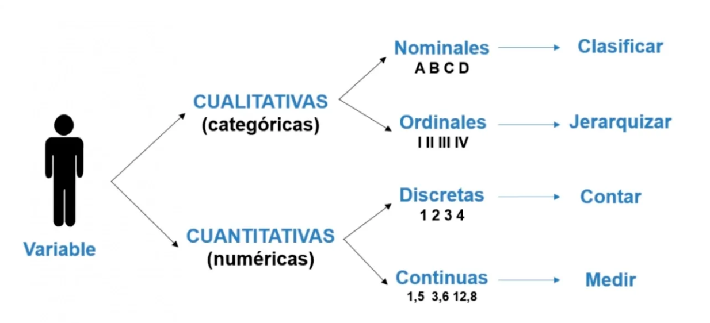

5[1] 5R es un lenguaje de programación y un entorno de software libre orientado principalmente al análisis estadístico y la representación gráfica de datos.
R es un lenguaje de programación que adopta el paradigma de la “programación orientada a objetos”. Esto significa que, en R, todo se considera un “objeto”, ya sea un número, una base de datos o un modelo estadístico.
Cada objeto tiene atributos y comportamientos asociados que determinan cómo se puede interactuar con él.
Imagina que cada objeto en R es como un coche. Los “atributos” de ese coche pueden incluir su color, marca, modelo, y año de fabricación. Estos atributos describen las características específicas del coche. Ahora, piensa en los “comportamientos asociados” como las acciones que puedes realizar con ese coche: encenderlo, acelerar, frenar o encender las luces. Del mismo modo, en R, un objeto, como un conjunto de datos, podría tener atributos que describan su tamaño, tipo y estructura. Y los comportamientos asociados de ese conjunto de datos podrían incluir operaciones como filtrar, ordenar o aplicar una función estadística.
Existen varias formas de escribir código en el R. Para ello tenemos algunas opciones simples, como el Script y otras un poco más elaboradas como el R Markdown.
Para fines de esta primera clase vamos a utilizar el script, el cual es un documento de texto que tiene la peculiaridad que puede ser leídos por el programa como un manual de código. De esa forma, nosotros podemos colocar en el script los códigos de nuestro análisis, ordenarlos, comentarlos y reproducirlos en el R Studio automáticamente.
En suma, podemos redactar nuestros script, compartirlos con otros investigadores y ejecutarlos.
Como comentario: Cuando nosotros colocamos el símbolo # al iniciar una oración, el Script lo va a identificar como un comentario del programador, como un texto que no va a ser ejecutado como código. Esto es importante porque nos permite ir comentando, por ejemplo, lo que estamos redactando en el documento. Ej: “Este código sirve para abrir un archivo”, “Aquí estoy haciendo un análisis de regresión”, entre otros.
Como código: Cuando escribimos directamente en el documento el programa lo va a entender como código o funciones. Esto es importante tenerlo en cuenta para evitar notificaciones de Error.
Te recomiendo ver el siguiente video para que puedas aprender más sobre el Script, pero también sobre las otras opciones que el R te puede ofrecer y que usaremos más adelante.
Vamos a examinar la clase de algunos de los elementos más básicos en R.
Un objeto puede ser un número. En este caso el objeto es de tipo numeric.
5[1] 5O también podría ser un nombre de un país. En este caso el objeto es de tipo character. Vas a notar que se trata de un caractér porque vas a visualizar el resultado entre comillas.
"Perú"[1] "Perú"Los objetos también pueden almacenarse en la memoria del programa con ciertos “nombres”. Por ejemplo:
year<-2024
year[1] 2024country<-"Perú"
country[1] "Perú"Uno puede asignar un nombre a un objeto en el R con la flecha de asignación (<-)
En la próxima clase, exploraremos otro tipo de objetos conocidos como factores.
Un vector es una colección de uno o más datos del mismo tipo.
Tipo. Un vector tiene el mismo tipo que los datos que contiene. Si tenemos un vector que contiene datos de tipo numérico, el vector será también de tipo numérico.
Ejemplo: Vamos a crear tres vectores: uno numérico, uno de caracter.
vector_numerico <- c(1, 2, 3, 4, 5)
vector_numerico[1] 1 2 3 4 5vector_caracter <- c("arbol", "casa", "persona")
vector_caracter[1] "arbol" "casa" "persona"Una función es como una máquina a la que le das un insumo, o input para que realice un procedimiento específico. Luego de realizar el procedimiento, la máquina te da un resultado que le vamos a llamar output.
Por ejemplo, podemos utilizar la función sqrt() para obtener la raíz cuadrada de un número. En este caso aplicamos una función sobre un sólo número.
sqrt(16)[1] 4Pero también podemos aplicar una función sobre un vector. Por ejemplo, podemos solicitar la función sum() para obtener la suma de todos los elementos de un vector numérico:
sum(vector_numerico)[1] 15También podemos utilizar la función class() para corroborar que la clase del vector que tenemos.
class(vector_numerico)[1] "numeric"class(vector_caracter)[1] "character"Siempre te vas a dar cuenta que estás frente a una función porque usualmente está seguida de paréntesis en el cual se colocan los argumentos.
Los data frames son estructuras de datos de dos dimensiones (rectangulares) que pueden contener vectores de diferentes tipos.
Es la estructura más usada para ciencia de datos y la que vamos a ver de forma más recurrente en el curso.
Lo más importante que debes recordar es que las filas en un dataframe representan casos, individuos u observaciones, mientras que las columnas representan atributos, rasgos o variables.
Por ejemplo, tenemos la siguiente información sobre ciertos departamentos del Perú y sus niveles de pobreza:
departamentos<-c("Huancavelica", "Ayacucho", "Pasco")
pobreza<-c(47.7, 46.4, 44.8)
mi_df<-data.frame(departamentos, pobreza)
mi_df departamentos pobreza
1 Huancavelica 47.7
2 Ayacucho 46.4
3 Pasco 44.8Una forma de examinar rápidamente un dataframe es utilizando la función str():
str(mi_df)'data.frame': 3 obs. of 2 variables:
$ departamentos: chr "Huancavelica" "Ayacucho" "Pasco"
$ pobreza : num 47.7 46.4 44.8El output de esta función te indica las dimensiones del dataframe (número de observaciones y número de variables), así como los nombres de las variables, el tipo y algunos valores de muestra.
Otra función básica para explorar es names(), la cual te arroja exclusivamente los nombres de las variables del dataframe:
names(mi_df)[1] "departamentos" "pobreza" Un error frecuente es no identificar correctamente las unidades de análisis con las que estamos trabajando. Al abrir un conjunto de datos, lo primero que debes preguntarte es: ¿A qué se refiere esta información? ¿A personas, países, instituciones?
Usar índices para obtener subconjuntos es el procedimiento más universal en R, pues funciona para todas las estructuras de datos.
Un índice en R representa una posición.
Cuando usamos índices le pedimos a R que extraiga de una estructura los datos que se encuentran en una o varias posiciones específicas dentro de ella.
Ejemplos:
mi_df [,2][1] 47.7 46.4 44.8Para seleccionar una columna, también podemos usar el símbolo de $.
mi_df$pobreza[1] 47.7 46.4 44.8Normalmente lo usamos cuando queremos aplicar una función a sólo una columna. Como por ejemplo:
mean(mi_df$pobreza)[1] 46.3mi_df [2,] departamentos pobreza
2 Ayacucho 46.4mi_df [2,2][1] 46.4Recuerda que en los [,] primero se mencionan las filas y luego las columnas.
Hasta aquí hemos aprendido los elementos básicos del R, ahora procederemos a analizar los procedimientos más cotidianos que realizaremos en un proceso de análisis de datos estadísticos.
Líneas arriba te había comentado que existían funciones que podías aplicar sobre objetos en el R. Dabas un input y la función te arrojaba un determinado resultado.
Ahora bien, lo más interesante del R es que existen diferentes “conjuntos de funciones” para tareas específicas y que uno puede instalar y utilizar en tu proceso de análisis.
Para instalar un paquete necesitas escribir install.packages("nombre_del_paquete"). Luego de instalarlo, para comenzar a utilizarlo debes abrirlo con el siguiente comando library(nombre_del_paquete).
Hagamos la prueba con el paquete rio, el cual es un paquete creado para importar/exportar archivos de diversos tipos.
Primero lo vamos a instalar. No te olvides que cuando instalas un paquete el nombre del mismo va entre comillas:
#install.packages("rio")Recuerda que la instalación de paquetes se realiza sólo una vez. Esto quiere decir que si instalas hoy el paquete “rio” ya no será necesario que realices esta operación nuevamente.
Luego de instalarlo lo debemos abrir para utilizar las funciones que están dentro de él.
library(rio)Lo más común es que se te va a entregar un archivo para que lo puedas abrir en el R.
Para ello, una primera forma sencilla de abrir un archivo es haciendo uso de la función import del paquete rio:
data<-import("data/regiones.xlsx")
#Dentro del () colocas la ubicación del archivo.Una vez que abrimos una data y corroboramos que está en nuestro Environment podemos explorarla.
Viendo un encabezado de las primeras filas:
head(data) region macroregion poblacion pobreza nivel_pobreza agua desague
1 Amazonas Oriente 379384 47.3 3 51.84 36.69
2 Ancash Norte 1083519 23.5 2 71.56 56.38
3 Apurímac Sur 405759 42.8 3 56.33 36.12
4 Arequipa Sur 1382730 9.1 1 72.47 65.85
5 Ayacucho Sur 616176 51.9 3 66.99 45.35
6 Cajamarca Norte 1341012 52.9 3 52.89 32.48
electrificacion acceso_internet telefonia_movil pc_tablet hospitales
1 73.67 4.45 69.39 11.02 8
2 85.20 18.33 79.60 25.00 23
3 80.43 8.93 71.21 14.74 8
4 89.98 32.88 91.28 40.52 24
5 80.94 10.42 77.65 17.84 11
6 80.68 9.29 74.66 14.10 25Analizando su estructura:
str(data)'data.frame': 24 obs. of 12 variables:
$ region : chr "Amazonas" "Ancash" "Apurímac" "Arequipa" ...
$ macroregion : chr "Oriente" "Norte" "Sur" "Sur" ...
$ poblacion : num 379384 1083519 405759 1382730 616176 ...
$ pobreza : num 47.3 23.5 42.8 9.1 51.9 52.9 18.8 46.6 40.1 4.7 ...
$ nivel_pobreza : num 3 2 3 1 3 3 2 3 3 1 ...
$ agua : num 51.8 71.6 56.3 72.5 67 ...
$ desague : num 36.7 56.4 36.1 65.8 45.4 ...
$ electrificacion: num 73.7 85.2 80.4 90 80.9 ...
$ acceso_internet: num 4.45 18.33 8.93 32.88 10.42 ...
$ telefonia_movil: num 69.4 79.6 71.2 91.3 77.7 ...
$ pc_tablet : num 11 25 14.7 40.5 17.8 ...
$ hospitales : num 8 23 8 24 11 25 20 5 9 25 ...names(data) [1] "region" "macroregion" "poblacion" "pobreza"
[5] "nivel_pobreza" "agua" "desague" "electrificacion"
[9] "acceso_internet" "telefonia_movil" "pc_tablet" "hospitales" 
Antes de seguir en el análisis debemos corroborar los tipos de variables con los que estamos trabajando a nivel teórico.
En una data real, esto normalmente lo encontramos en el Cuestionario o Diccionario de Variables. Según la teoría estadistica podemos tener dos grandes opciones.
Las variables numéricas son aquellas que representan cantidades medidas o contadas, y pueden ser de tipo entero o decimal. Permiten realizar operaciones matemáticas y son fundamentales en el análisis estadístico y cuantitativo.
Se clasifican en continuas y discretas, basándose en los valores que pueden tomar.
Las variables discretas representan información que se puede contar en unidades enteras, como el número de hospitales en nuestra base de datos.
Por otro lado, las variables continuas pueden tomar cualquier valor dentro de un rango, incluyendo decimales. En nuestra base de datos contamos con variables como * como la altura o el peso pobreza, agua, entre otros. Esto significa que pueden medir con precisión infinita dentro de su escala, adaptándose a una variedad más amplia de datos y mediciones.
Una variable categórica clasifica las observaciones en grupos o categorías que no tienen un orden matemático inherente. Se dividen en nominales y ordinales.
Las variables nominales representan categorías sin un orden específico entre ellas, como colores, nombres de países o géneros. En nuestra data una variable nominal sería macroregion.
En cambio, las variables ordinales sí poseen un orden o jerarquía entre las categorías, aunque la distancia entre estas no es necesariamente uniforme; por ejemplo, niveles de educación o calificaciones de satisfacción. Continuando con el ejemplo, la variable ordinal nivel_pobreza clasifica en categorías donde el 1 corresponde a “Bajo”, el 2 a “Medio” y el 3 a “Alto”.
Ahora veamos qué tenemos en nuestra data.
Veamos las siguientes tres variables: poblacion (numérica), macroregión (nominal) y nivel de pobreza (ordinal).
Dichas variables qué tipo de objeto son actualmente en el R?
class(data$poblacion)[1] "numeric"Para el caso de población cuenta con la configuración adecuada pues es numeric.
Ten en cuenta que para el caso de una variable numérica discreta como hospitales la configuración adecuada también es numeric.
Para el caso de las variables categóricas, para poder trabajar con estas en el R debemos convertirlas a un tipo especial de objeto denominado factor.
Básicamente, un factor es una variable que tiene grupos, los cuales pueden estar ordenados o no ordenados.
FACTORES NO ORDENADOS
Para el caso de la variable nominal macroregión que inicialmente está mal configurada (pues tiene el tipo character).
class(data$macroregion)[1] "character"vamos a convertirla en un factor no ordenado.
data$macroregion<-factor(data$macroregion)Hemos empleado la función factor() y el operador de asignación porque estamos modificando una parte de nuestro conjunto de datos. En otras palabras, estamos actualizando la variable macroregión con su configuración correcta.
Podemos corroborar el tipo final pidiendo otra vez la función str():
str(data$macroregion) Factor w/ 4 levels "Centro","Norte",..: 3 2 4 4 4 2 4 1 1 1 ...En este caso nos menciona que ahora la variable macroregion es un factor con cuatro niveles (Centro, Norte, Sur, Oriente).
Si bien aquí vemos la palabra “niveles” esto no quiere decir que para R esos niveles tengan un orden, sino más bien que son categorías diferentes.
FACTORES ORDENADOS
Ahora bien, el caso del nivel de pobreza es diferente, ya que, aunque también es un factor, sus niveles presentan un orden de magnitud específico.
En este caso, además de convertirla en factor, es necesario especificar el orden de los niveles, indicando que efectivamente se trata de una secuencia ordenada.
data$nivel_pobreza<-factor(data$nivel_pobreza,
levels = c(1,2,3),
ordered = TRUE)Mediante la función str(), confirmamos que nuestra variable nivel_pobreza se ha convertido efectivamente en un factor ordenado con tres niveles, donde 1 es menor que 2 y, a su vez, 2 es menor que 3.
str(data$nivel_pobreza) Ord.factor w/ 3 levels "1"<"2"<"3": 3 2 3 1 3 3 2 3 3 1 ...Aunque para nosotros los niveles parecen ser números (1, 2 o 3), para R no lo son. Esto significa que no es posible realizar operaciones matemáticas con ellos.
Ahora con esta configuración ya estamos listos para el siguiente paso: manipular tablas y calculas estadísticos descriptivos.
str(data)'data.frame': 24 obs. of 12 variables:
$ region : chr "Amazonas" "Ancash" "Apurímac" "Arequipa" ...
$ macroregion : Factor w/ 4 levels "Centro","Norte",..: 3 2 4 4 4 2 4 1 1 1 ...
$ poblacion : num 379384 1083519 405759 1382730 616176 ...
$ pobreza : num 47.3 23.5 42.8 9.1 51.9 52.9 18.8 46.6 40.1 4.7 ...
$ nivel_pobreza : Ord.factor w/ 3 levels "1"<"2"<"3": 3 2 3 1 3 3 2 3 3 1 ...
$ agua : num 51.8 71.6 56.3 72.5 67 ...
$ desague : num 36.7 56.4 36.1 65.8 45.4 ...
$ electrificacion: num 73.7 85.2 80.4 90 80.9 ...
$ acceso_internet: num 4.45 18.33 8.93 32.88 10.42 ...
$ telefonia_movil: num 69.4 79.6 71.2 91.3 77.7 ...
$ pc_tablet : num 11 25 14.7 40.5 17.8 ...
$ hospitales : num 8 23 8 24 11 25 20 5 9 25 ...